rm(list = ls()) # clean memory
library(readxl)Warning: package 'readxl' was built under R version 4.4.2df <- read_excel("C:\\Users\\bella\\OneDrive\\UMass\\DACSS_690V\\HW_3\\ncesdata_MASS_202425.xlsx")rm(list = ls()) # clean memory
library(readxl)Warning: package 'readxl' was built under R version 4.4.2df <- read_excel("C:\\Users\\bella\\OneDrive\\UMass\\DACSS_690V\\HW_3\\ncesdata_MASS_202425.xlsx")dim(df)[1] 1824 26names(df) [1] "NCES School ID" "State School ID" "NCES District ID"
[4] "State District ID" "Low Grade" "High Grade"
[7] "School Name" "District" "County Name"
[10] "Street Address" "City" "State"
[13] "ZIP" "ZIP 4-digit" "Phone"
[16] "Locale Code" "Locale" "Charter"
[19] "Students" "Teachers" "Student Teacher Ratio"
[22] "Free Lunch" "Reduced Lunch" "Directly Certified"
[25] "Type" "Status" table(unlist(sapply(df, class)))
character
26 head(df$Charter,20) #first twenty values [1] "No" "No" "No" "No" "No" "No" "No" "No" "Yes" "No" "No" "No"
[13] "No" "No" "No" "No" "No" "No" "Yes" "No" # absolute values
absoluteT=table(df$Charter,
useNA = "ifany") #include all values!
#here you are:
absoluteT
No Yes
1751 73 names(absoluteT)[is.na(names(absoluteT))] <- 'Unknown'# relative values
prop.table(absoluteT) No Yes
0.95997807 0.04002193 propT=prop.table(absoluteT)*100
#you get:
propT No Yes
95.997807 4.002193 # pie(absoluteT) # pies are not the first option.
# as data frame
(tableFreq=as.data.frame(absoluteT)) Var1 Freq
1 No 1751
2 Yes 73# renaming data frame columns
names(tableFreq)=c("Charter","Count")
# adding percents:
tableFreq$Percent=as.vector(propT)
# then, you have:
tableFreq Charter Count Percent
1 No 1751 95.997807
2 Yes 73 4.002193library(ggplot2)Warning: package 'ggplot2' was built under R version 4.4.3#base GGPLOT2 starts with a "base", telling WHAT VARIABLES TO PLOT
base= ggplot(data = tableFreq,
aes(x = Charter, # horizontal
y = Count)) #vertical
plot1 = base + geom_col()plot1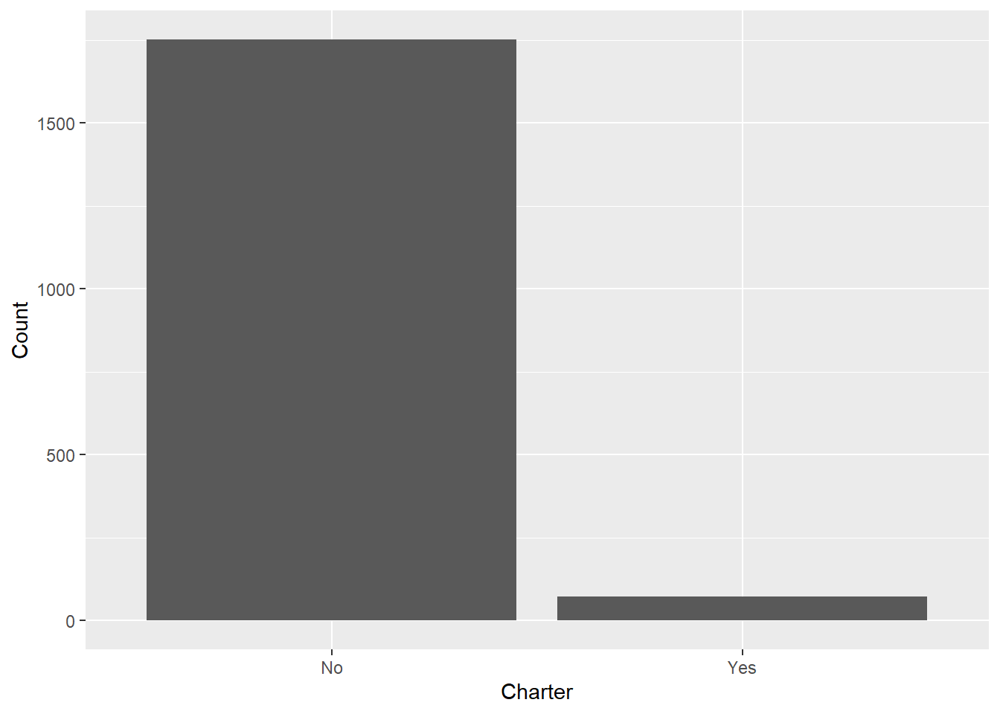
titleText='Charter School Type?'
sub_titleText='Massachusetts - 2024-2025'
sourceText='National Center for Education Statistics'
# are these obvious?
x.AxisText="Locations"
y.AxisText="Count"
plot2 = plot1 + labs(title=titleText,
subtitle = sub_titleText,
x =NULL, #x.AxisText
y = NULL, #y.AxisText
caption = sourceText)
plot2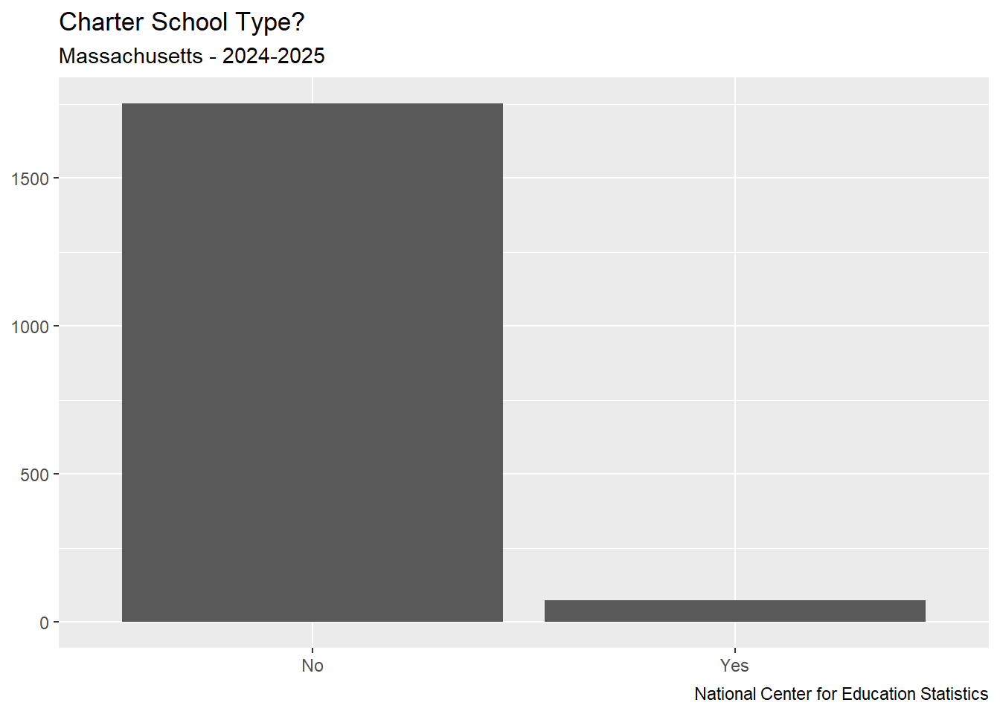
base = ggplot(data = tableFreq,
aes(x = Charter,
y = Percent))
plot1 = base + geom_col(fill = "gray")
plot2 = plot1 + labs(title = titleText,
subtitle = sub_titleText,
x = NULL,
y = NULL,
caption = sourceText)
plot3 = plot2 + geom_hline(yintercept = 7,
linetype = "dashed",
linewidth = 1.5,
alpha = 0.5)
plot3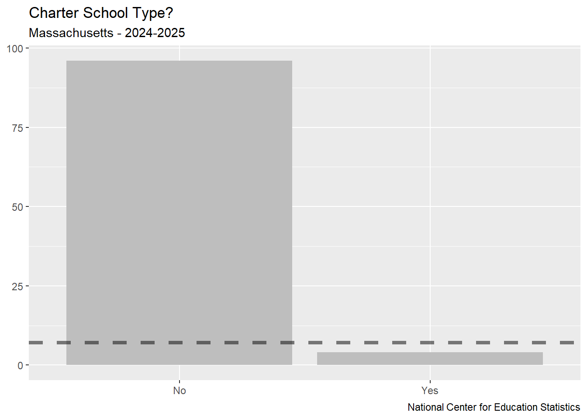
According to the national average, charter schools make up around 7% of all public schools in the US. That is why I made the reference line at 7%. That way, it is easy to compare the percent of charter schools in Massachusetts compared to the US average.
library(scales)Warning: package 'scales' was built under R version 4.4.3plot4 = plot3 + scale_y_continuous(breaks = c(0, 7, 50, 100),
limits = c(0, 100),
labels = unit_format(suffix = '%'))
plot4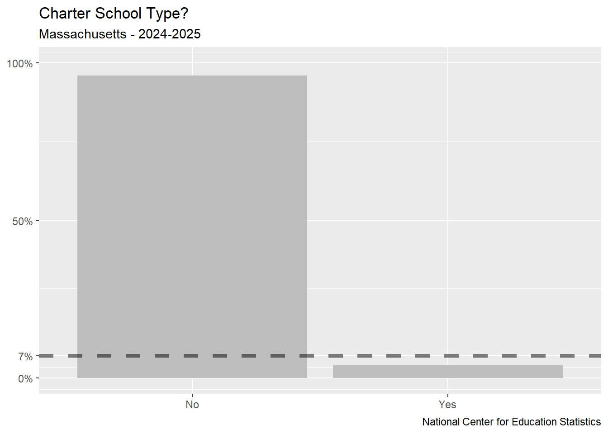
plot5 = plot4 + theme(plot.caption = element_text(hjust = 0),
plot.title = element_text(hjust = 0.5))
plot5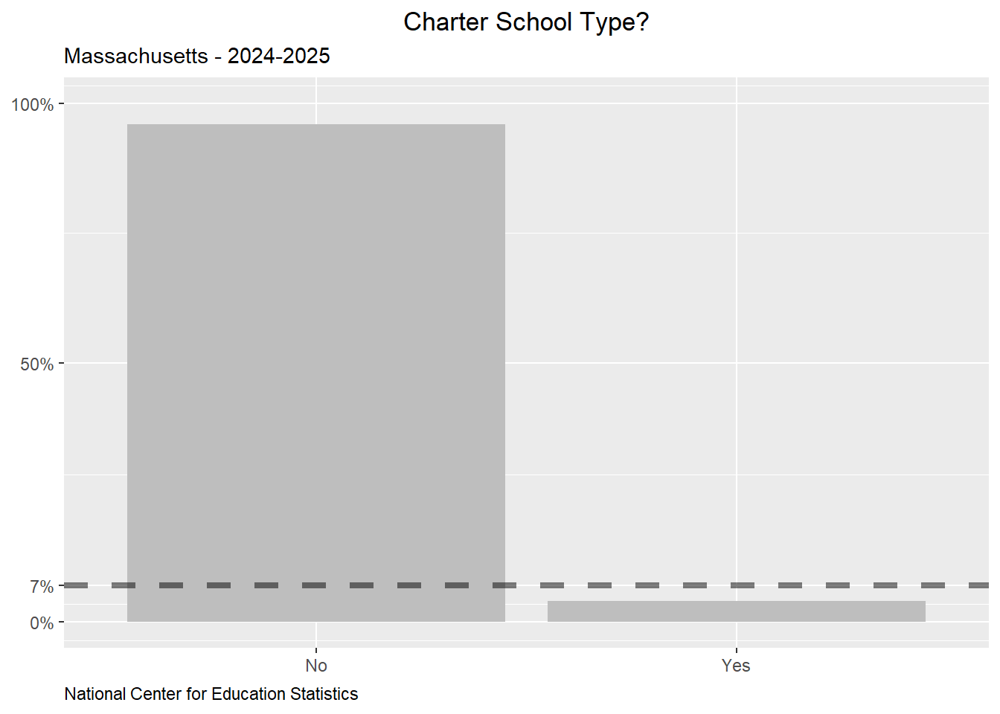
paste0(round(tableFreq$Percent,2), '%')[1] "96%" "4%" LABELS=paste0(round(tableFreq$Percent,2), '%')
plot6 = plot5 + geom_text(vjust=1,
size = 3,
aes(y = Percent ,
label = LABELS))
plot6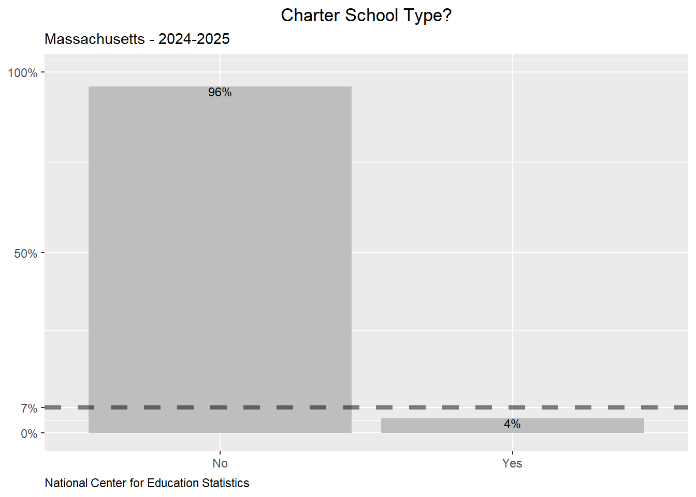
df$Teachers <- as.numeric(df$Teachers)Warning: NAs introduced by coercionsummary(df$Teachers) Min. 1st Qu. Median Mean 3rd Qu. Max. NA's
0.00 24.20 35.30 42.43 51.36 253.20 6 length(unique(df$Teachers))[1] 1405# extract summary stats
(statVals = summary(df$Teachers, digits = 3)[1:6]) Min. 1st Qu. Median Mean 3rd Qu. Max.
0.0 24.2 35.3 42.4 51.4 253.0 library(magrittr)
statVals = statVals %>% as.vector()
# standard deviation
sd(df$Teachers, na.rm = TRUE)[1] 30.39267# median absolute deviation
mad(df$Teachers, na.rm = TRUE)[1] 18.82902# coefficient of variation
library(DescTools)Warning: package 'DescTools' was built under R version 4.4.3CoefVar(df$Teachers, na.rm = TRUE)[1] 0.7162539# asymmetry
Skew(df$Teachers, na.rm = TRUE)[1] 2.25225# kurtosis
Kurt(df$Teachers, na.rm = TRUE)[1] 7.970644# confidence interval for the mean
MeanCI(df$Teachers, na.rm = TRUE) mean lwr.ci upr.ci
42.43282 41.03481 43.83083 cv = CoefVar(df$Teachers, na.rm = TRUE)
sd = SD(df$Teachers, na.rm = TRUE)
md = Median(df$Teachers, na.rm = TRUE)
mn = Mean(df$Teachers, na.rm = TRUE)
mn.low = MeanCI(df$Teachers,
na.rm = TRUE)[['lwr.ci']]
mn.up = MeanCI(df$Teachers,
na.rm = TRUE)[['upr.ci']]
sk = Skew(df$Teachers, na.rm = TRUE) #plotting
base= ggplot(df,aes(y = Teachers))
b1= base +
geom_boxplot() +
scale_y_continuous(breaks = statVals) #custom breaks
#then
b1Warning: Removed 6 rows containing non-finite outside the scale range
(`stat_boxplot()`).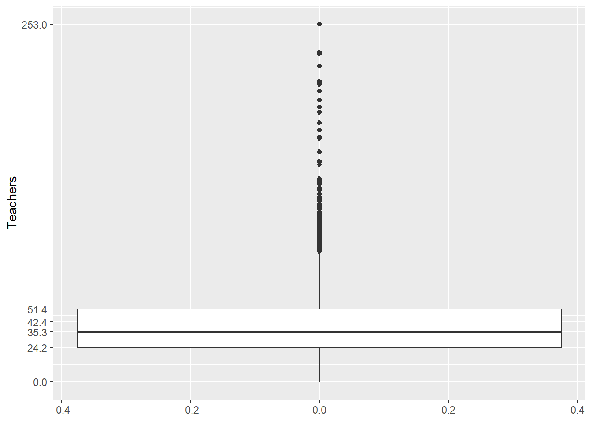
b1_flipped=b1 +coord_flip()
b1_flippedWarning: Removed 6 rows containing non-finite outside the scale range
(`stat_boxplot()`).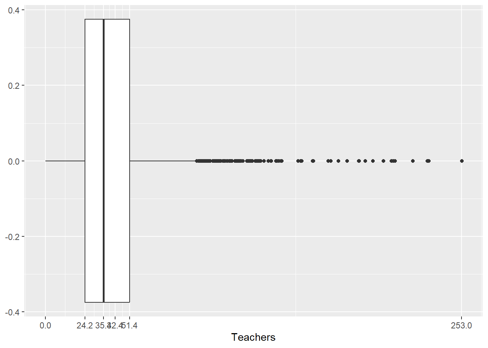
ggplot_build(b1)$data[[1]]Warning: Removed 6 rows containing non-finite outside the scale range
(`stat_boxplot()`). ymin lower middle upper ymax
1 0 24.2025 35.305 51.3575 91.97
outliers
1 103.36, 125.99, 120.21, 93.29, 110.55, 93.73, 125.47, 123.25, 113.34, 106.00, 132.96, 233.25, 155.28, 122.50, 92.10, 99.05, 111.70, 129.02, 110.50, 94.70, 129.92, 108.05, 98.23, 99.81, 211.55, 178.21, 183.50, 223.44, 93.46, 100.30, 125.72, 106.58, 124.87, 113.66, 135.66, 104.13, 112.81, 142.11, 103.02, 108.47, 143.43, 190.59, 128.26, 102.50, 115.35, 199.25, 98.12, 96.15, 143.88, 205.72, 190.88, 153.72, 125.30, 106.70, 118.56, 253.20, 100.08, 210.53, 127.59, 232.32, 137.39, 130.47, 118.80, 117.68, 106.60, 101.90, 116.13, 130.02, 140.77, 110.74, 119.00, 109.32, 140.20, 137.43, 212.66, 194.47, 162.95, 99.68, 95.23, 97.94, 128.80, 99.17, 129.42, 105.05, 98.97, 118.31, 155.88, 116.76, 97.11, 97.47, 130.00, 131.10, 124.50, 123.22, 94.49, 133.00, 162.63, 103.79, 173.50, 143.39, 99.17, 105.78, 137.13, 172.06, 102.24, 117.05, 93.97, 94.80, 102.37, 140.97, 124.02, 94.81, 99.20, 112.04, 118.03
notchupper notchlower x flipped_aes PANEL group ymin_final ymax_final xmin
1 36.31126 34.29874 0 FALSE 1 -1 0 253.2 -0.375
xmax order xid newx new_width weight colour fill size alpha shape
1 0.375 1 1 0 0.75 1 #333333FF white 1.5 NA 19
linetype linewidth width
1 1 0.5 0.9(upperT=ggplot_build(b1)$data[[1]]$ymax)Warning: Removed 6 rows containing non-finite outside the scale range
(`stat_boxplot()`).[1] 91.97(numOutliers=sum(df$Teachers>upperT,na.rm = TRUE))[1] 115# text for annotations
txtOutliers=paste0('Count of outlying schools: ',numOutliers)
txtUpper=paste0('Threshold: ',upperT)
b1_annotated = b1_flipped + geom_hline(yintercept = upperT,
color='red',
linetype="dotted",
linewidth=2) +
annotate(geom = 'text',
label=txtUpper,
y = upperT+5,
x=0.2,
angle=90) + # text angle
annotate(geom = 'text',
label=txtOutliers,
y = upperT+60,
x=0.1,
angle=0)
b1_annotatedWarning: Removed 6 rows containing non-finite outside the scale range
(`stat_boxplot()`).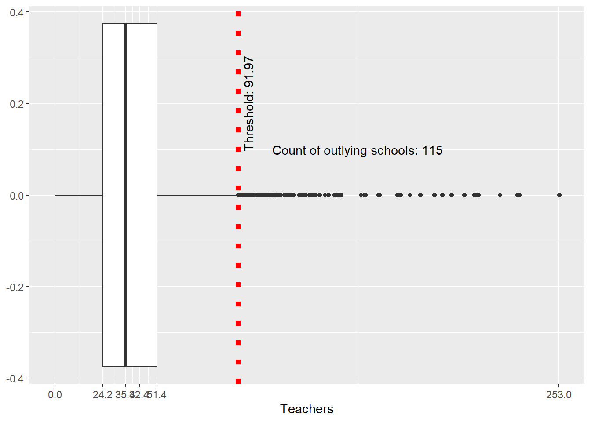
b1_annot_noX = b1_annotated +
theme(axis.text.y = element_blank(),
axis.ticks.y = element_blank(),
axis.title.y = element_blank())
b1_newGrid=b1_annot_noX + theme(panel.grid = element_blank())
b1_newGrid_axisText = b1_newGrid+ theme(axis.text.x = element_text(angle = 60,
size = 7,
vjust = 0.5))
b1_newGrid_axisTextWarning: Removed 6 rows containing non-finite outside the scale range
(`stat_boxplot()`).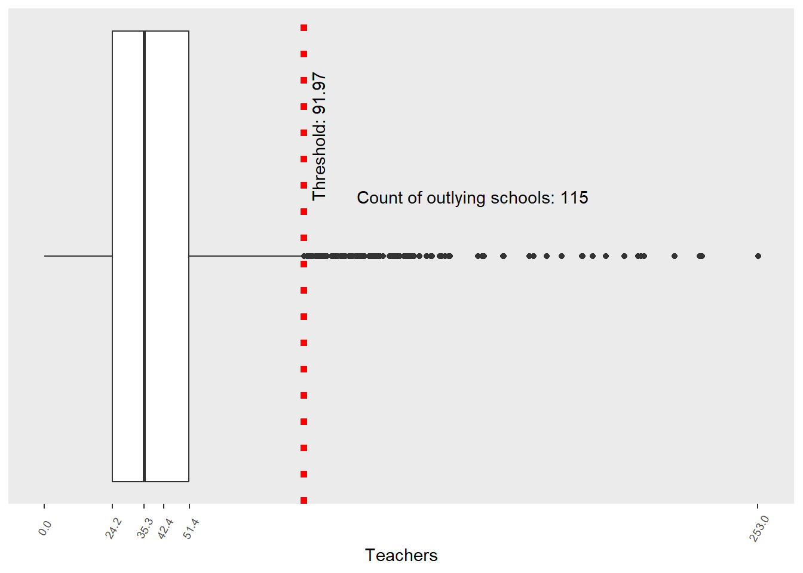
#ggplot
barWIDTH=10
base= ggplot(df)
h1= base + geom_histogram(aes(x = Teachers),
binwidth = barWIDTH,
fill='black')
h1 = h1 + labs(y = "Number of Schools",
x = "Number of Teachers per School")# texts
txtMean=paste0('Mean:',round(mn))
txtSkew=paste0('Skewness:',round(sk,2))
txtMedian=paste0('Median:',round(md,2))
# adding
h1_ann=h1+ geom_vline(xintercept = mn,color='red') +
# about the mean
annotate(geom = 'text',color='red',
label=txtMean,
y = 350,
x=mn+5,
angle=90) +
# about the skewness
annotate(geom = 'text', color='blue',
label=txtSkew,
y = 30,
x=upperT+100,
angle=0) +
scale_x_continuous(limits = c(0, 250)) +
theme(panel.grid = element_blank())
h1_ann Warning: Removed 7 rows containing non-finite outside the scale range
(`stat_bin()`).Warning: Removed 2 rows containing missing values or values outside the scale range
(`geom_bar()`).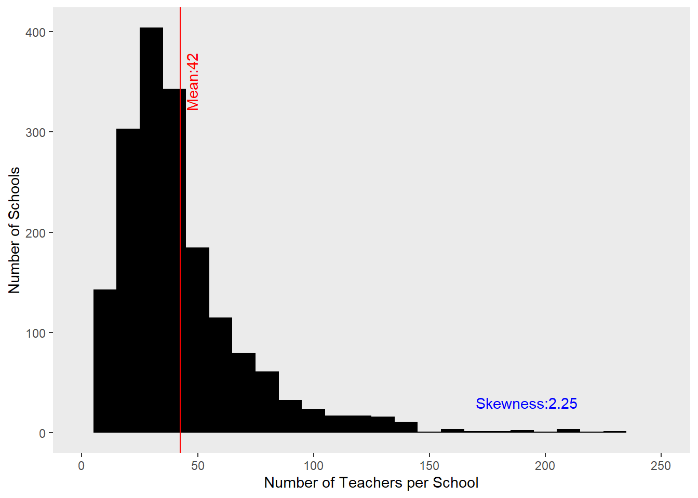
library(patchwork)
h1_ann/b1_newGrid_axisTextWarning: Removed 7 rows containing non-finite outside the scale range (`stat_bin()`).
Removed 2 rows containing missing values or values outside the scale range
(`geom_bar()`).Warning: Removed 6 rows containing non-finite outside the scale range
(`stat_boxplot()`).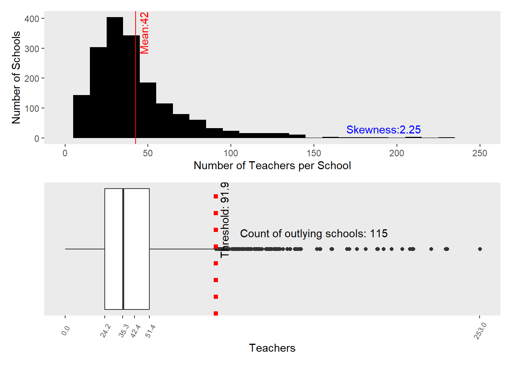